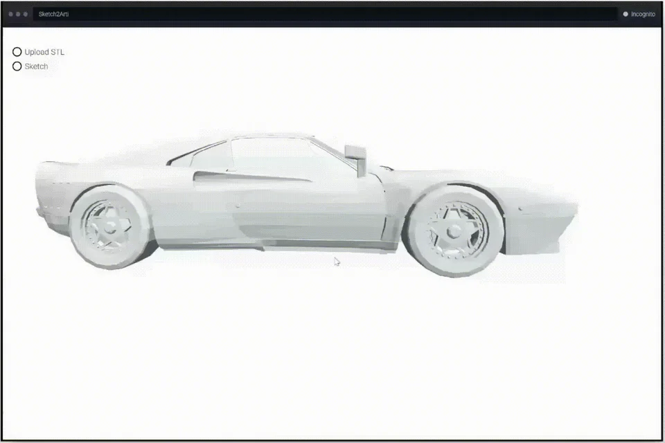
Sketch2Arti
Bring CAD objects to life through simple motion sketches.
What we explore
We connect geometry, learning and interaction to understand, create and animate the visual world.
How can we make structured CAD models easier to create and edit?
From freehand input to editable CAD: creating, understanding and modifying structured models.

Bring CAD objects to life through simple motion sketches.
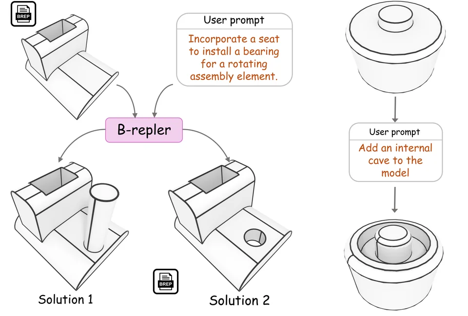
Edit CAD geometry with natural language.
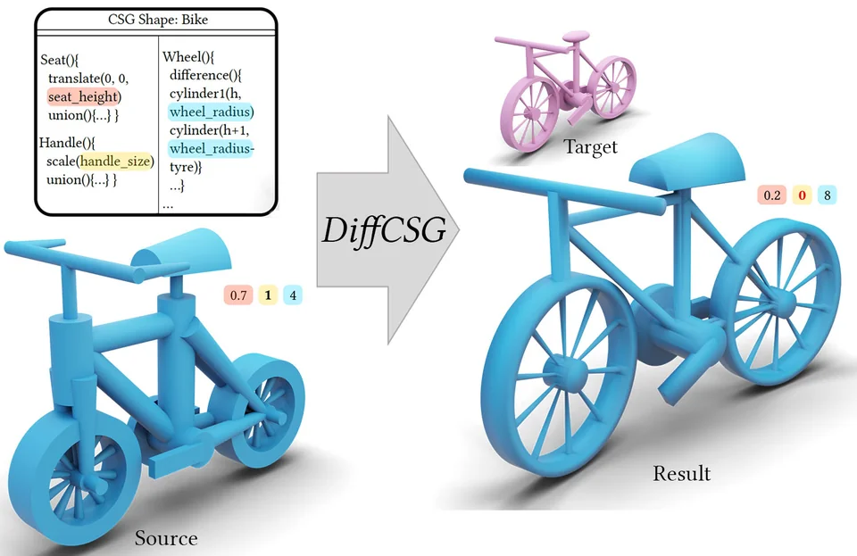
Optimize constructive solid geometry through differentiable rasterization.
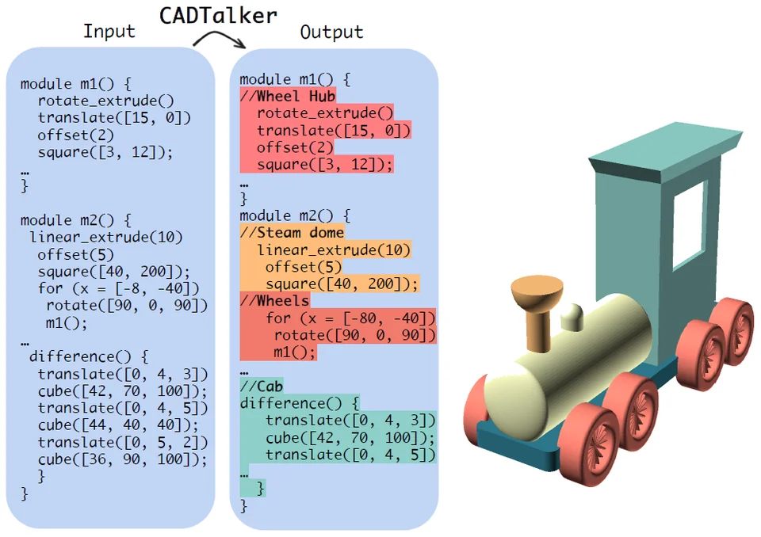
Add semantic comments to CAD programs.
CVPR Highlight (top 10%)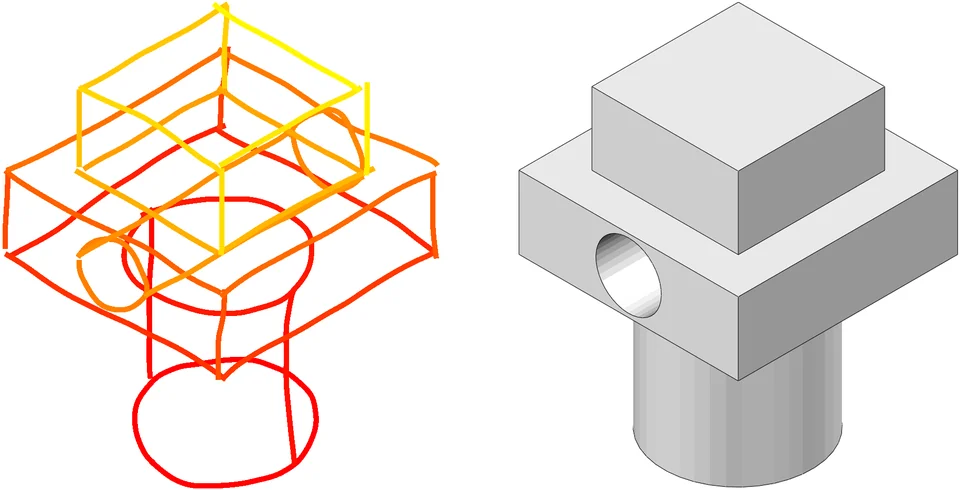
Turn freehand drawings into structured CAD commands.
Best Paper Honorable Mention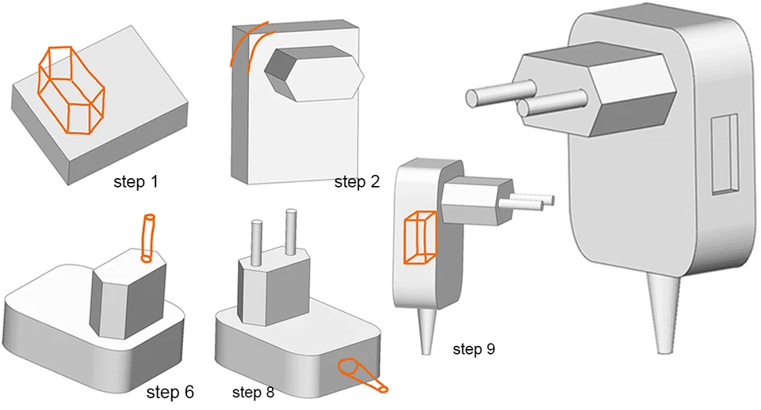
Build CAD models by sketching in context.
How can sketches and curves become expressive 3D shapes?
From drawn curves to freeform surfaces: intuitive ways to express and build 3D shape.
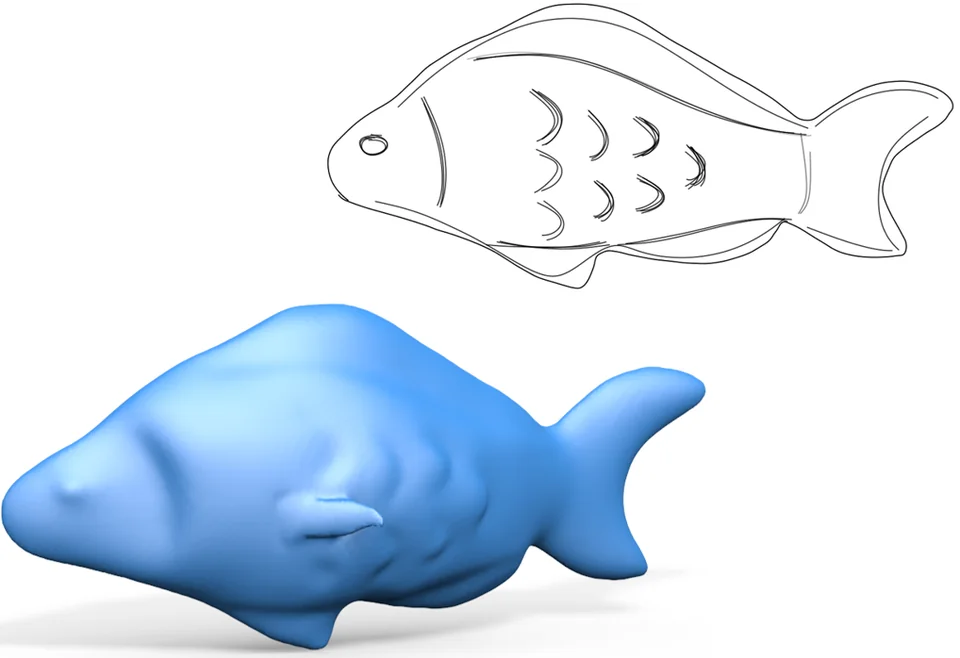
Predict freeform surfaces from sketches with flow-guided modeling.
TOG Cover Image · SIGGRAPH Asia Research Highlight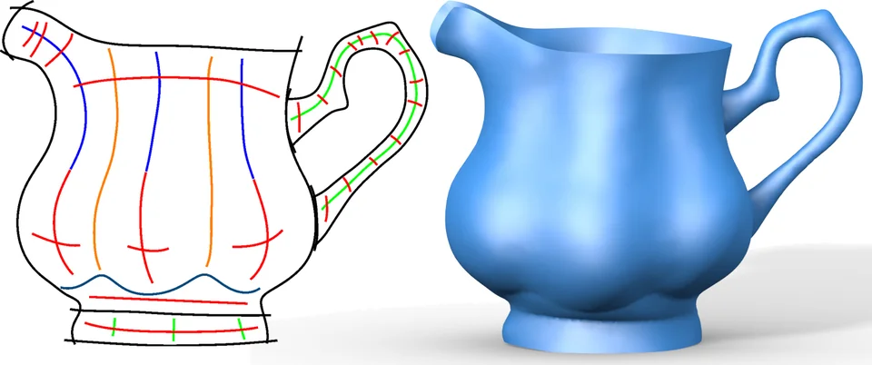
Model freeform surfaces through 2D sketches.
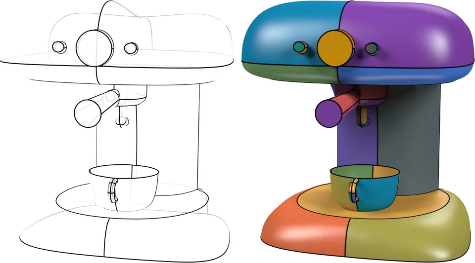
Build flow-aligned surfaces from networks of curves.
How can we turn human intent into controllable motion?
We turn storyboards and physical interaction into expressive animation, and develop representations for controllable motion.
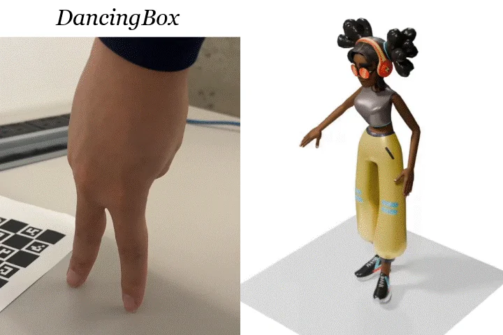
Animate digital characters by moving physical proxies.
Best Paper Honorable Mention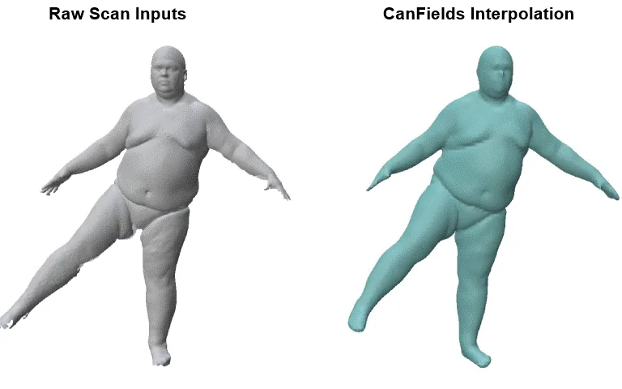
Interpolate deforming shapes with a continuous representation.
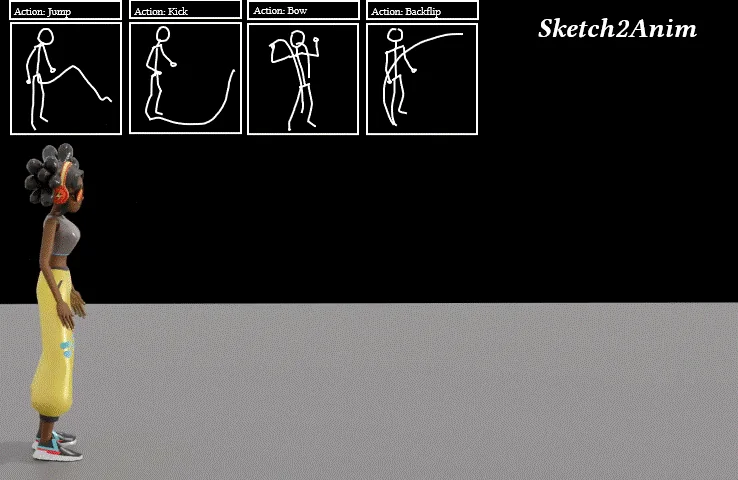
Turn sketch storyboards into expressive 3D animation.
SIGGRAPH Technical Paper HighlightHow can we recover geometry and understand its structure?
We recover 3D geometry from incomplete observations and understand the structure and appearance of objects.
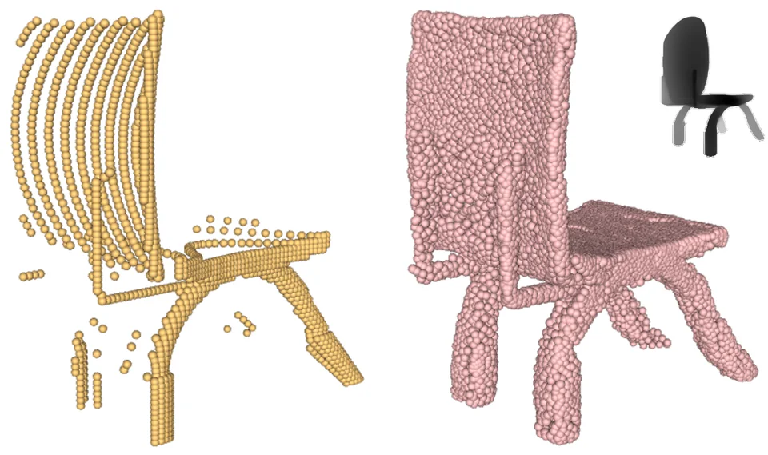
Recover complete 3D shapes from partial point clouds.
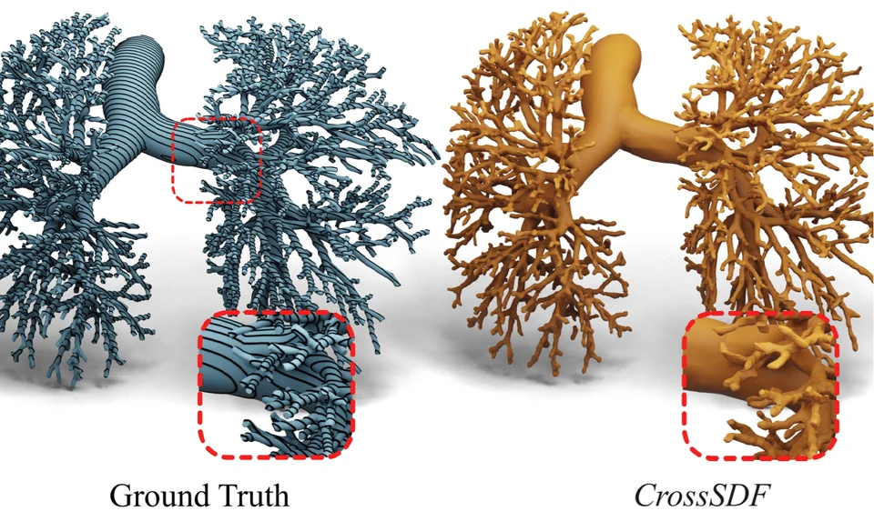
Reconstruct thin 3D structures from cross-sections.
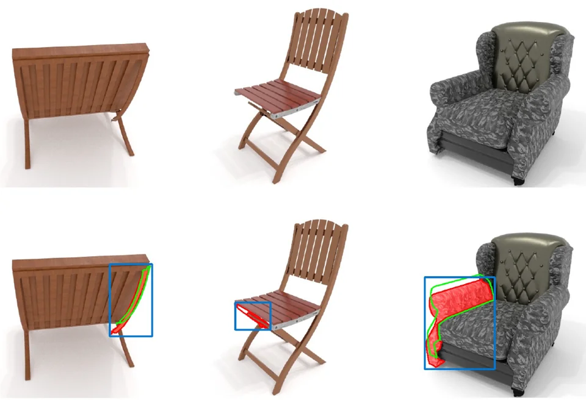
Detect anomalies by aligning 2D images with 3D geometry.
These themes bring together work by Changjian Li and collaborators, including research before the lab was established in Edinburgh. Browse all publications →